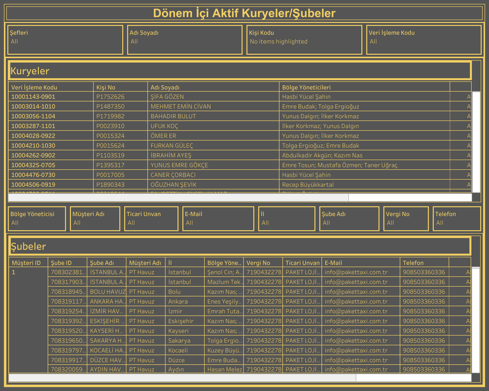

Canlı Rapora Erişin
Güncel dönem içi kuryelik verilerini Tableau üzerinde interaktif olarak görüntüleyin.
Dashboard Hakkında
Ne Gösterir?
Dönem İçi Aktif Kuryelikler/Şubeler raporu, seçilen dönemde aktif olan kuryelerin ve bağlı şubelerin tüm operasyonel bilgilerini listeler. Hem kurye hem de şube boyutunda detaylı veri sunar.
- Kuryeler Tablosu: Veri işleme kodu, kişi no, adı soyadı ve bölge yöneticileri bilgileri
- Şubeler Tablosu: Müşteri ID, şube ID, şube adı, müşteri adı, il, bölge yöneticisi, vergi no, ticari unvan, e-posta ve telefon
- Filtreler: Şefleri, adı soyadı, kişi kodu ve veri işleme kodu filtreleri
- Bölge Yöneticileri: Her kurye için birden fazla bölge yöneticisi görüntülenebilir
Dashboard Önizleme

Dönem İçi Aktif Kuryelikler/Şubeler — Tableau